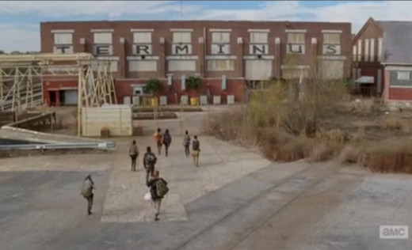

Road Trip To The Walking Dead Filming Locations
Fight the dead. Fear the living.
Between ruthless outlaws and the omnipresent zombies, you probably wouldn't last too long in the world of The Walking Dead.
That being said, AMC's show is pretty amazing. It takes place in Georgia, and is shot almost entirely in and around the
state, which makes visiting filming locations super easy...but of course, there are some spots that remain out of reach.
For example, Hershel's farm has been locked down, and the owners reportedly regret letting their property be used as a
filming location since so many people have come by looking to visit/find shelter from the never-ending hoards of walkers.
There's also the sad fact that the prison scenes weren't filmed at a real prison, but on a restricted access movie lot
(to keep out the zombies, presumably). But, at least you can grab a horse, or a tank, or an abandoned car from I-85 and
head across Georgia to check out these Walking Dead filming locations that are open to visitors.
Terminus - The Walking Dead
The abandoned rail yard where the community known as "Terminus" lived is a good place to reflect on good and evil in the
post-apocalyptic world of "The Walking Dead." Would you rather succumb to a paranoid existence, like the Terminants, or
die trying to keep a spark of good alive? Fun fact: "Terminus" was an early name for the city of Atlanta, where a lot
of the show takes place, since it was the end of the Western and Atlantic railroad line.
